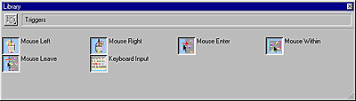
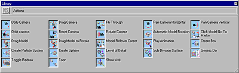

What's New in Director 8.5 > Using 3D Behaviors > Using the 3D Behavior Library
What's New in Director 8.5 > Using 3D Behaviors > Using the 3D Behavior Library |
Using the 3D Behavior Library
All 3D behaviors are listed in the Behavior Library. The Behavior Library is divided into two sublibraries: actions and triggers.
To view 3D trigger behaviors:
1 |
Click the Library Palette button on the Director 8.5 toolbar. |
2 |
Click the Library List button and select 3D. |
3 |
Select Triggers from the 3D submenu. |
The trigger behaviors appear.

The following table describes the available triggers.
Name |
Description |
|---|---|
Mouse Left |
Triggers action when the user presses, holds down, or releases the left mouse button (Windows) or mouse button (Macintosh). |
Mouse Right (Windows only) |
Triggers action when user presses, holds down, or releases the right mouse button. This trigger does not work with Shockwave or on Macintosh platforms. The same results can be achieved by using the left mouse button (Windows) or the mouse button (Macintosh) in conjunction with modifier keys. |
Mouse Within |
Triggers an action when the cursor is inside a sprite. |
Mouse Enter |
Triggers an action when the cursor enters a sprite. |
Mouse Leave |
Triggers an action when the cursor leaves a sprite. |
Keyboard Input |
Lets the author specify a given key as a trigger. |
You can add modifier keys to any trigger, so that a given trigger can be used to launch two different actions depending on whether the modifier key is being pressed. You could, for example, use Mouse Left and Mouse Left-Shift as separate triggers.
To view 3D action behaviors:
1 |
Click the Library Palette button on the Director 8.5 toolbar. |
2 |
Click the Library List button and select 3D. |
3 |
Select Actions from the 3D submenu. |
The action behaviors appear.
